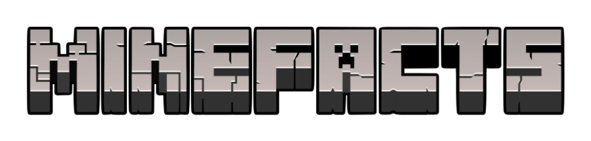
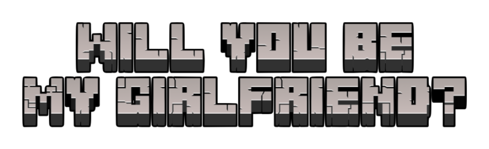
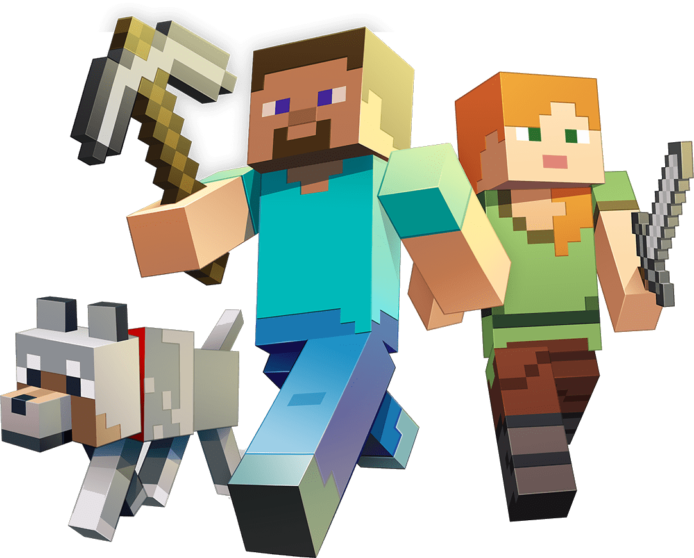

More

Dear Ash,
Hi baby, i hope nasurprise ka, I wanted to do something different—something special—so instead of writing just any letter, I made this website to show you just how much I love you. I’m not the best at writing letters, so please bear with me T-T.
Meeting you has been such a blessing. I know I’m not very religious, but if there is a God, I thank Him every day for bringing you into my life. You never asked me to be more than who I am, and yet, somehow, you made me want to become everything you deserve.
There’s so much I want to say about how beautiful you are—inside and out—but if I tried to fit it all into this letter, it would go on forever. So instead, I’ll pour it out slowly, like filling a warm cup of coffee.
When I first saw you, you didn’t just look nice—you looked like art. And art isn’t always meant to look perfect. It’s meant to make you feel something. That’s what you do to me. You make me feel so much. You’re warm, like the lake I swam in last March. You’re strong, silly, soft, and authentic. And sometimes, I still can’t believe I have someone like you in my life.
Loving you feels like coming home to a part of myself I never even knew was missing. You were the first person I ever felt completely certain about. Being with you felt so natural—like love wasn’t something I had to try so hard for. It just happened. It just was.
And because of that... I want more.
More days with you. More random conversations, chikahan, asaran. More memories.
So now I have to ask:
Hi baby, i hope nasurprise ka, I wanted to do something different—something special—so instead of writing just any letter, I made this website to show you just how much I love you. I’m not the best at writing letters, so please bear with me T-T.
Meeting you has been such a blessing. I know I’m not very religious, but if there is a God, I thank Him every day for bringing you into my life. You never asked me to be more than who I am, and yet, somehow, you made me want to become everything you deserve.
There’s so much I want to say about how beautiful you are—inside and out—but if I tried to fit it all into this letter, it would go on forever. So instead, I’ll pour it out slowly, like filling a warm cup of coffee.
When I first saw you, you didn’t just look nice—you looked like art. And art isn’t always meant to look perfect. It’s meant to make you feel something. That’s what you do to me. You make me feel so much. You’re warm, like the lake I swam in last March. You’re strong, silly, soft, and authentic. And sometimes, I still can’t believe I have someone like you in my life.
Loving you feels like coming home to a part of myself I never even knew was missing. You were the first person I ever felt completely certain about. Being with you felt so natural—like love wasn’t something I had to try so hard for. It just happened. It just was.
And because of that... I want more.
More days with you. More random conversations, chikahan, asaran. More memories.
So now I have to ask:


Steve and Alex, the default characters in Minecraft , have subtle differences beyond appearance—Steve has a broader build and a more squared jaw, while Alex has slimmer arms.
DID YOU KNOW?

MINEFACTS IS
I know I’m not perfect—sometimes I forget where I put my things, and I probably talk too much about random stuff, but I promise to love you with all the weird, soft, loyal parts of me. I may not always have the right words (or braincells), but I do have the right heart—and somehow, it’s already yours.
P.S. SHDBASHD I HOPE ITS NOT TOO CHEEEESSSYYY!!
P.S. SHDBASHD I HOPE ITS NOT TOO CHEEEESSSYYY!!